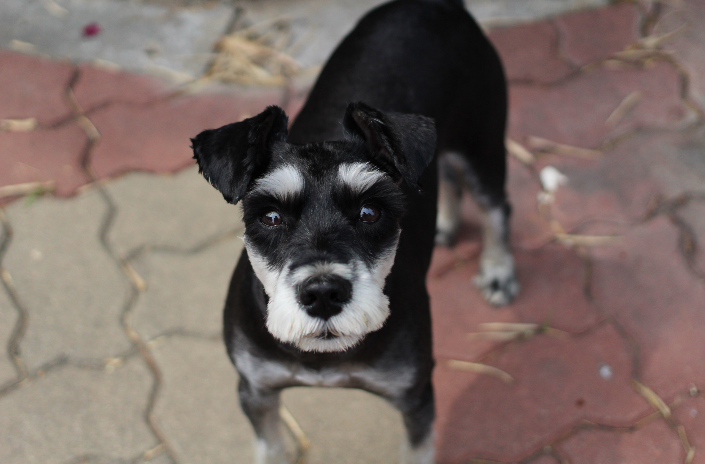
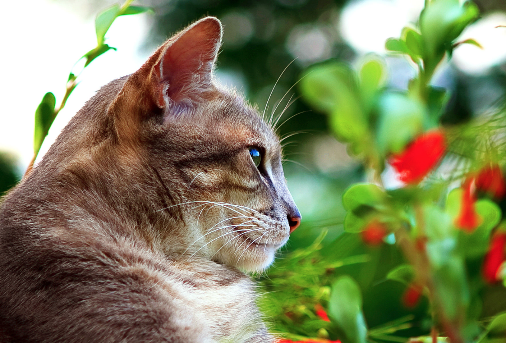
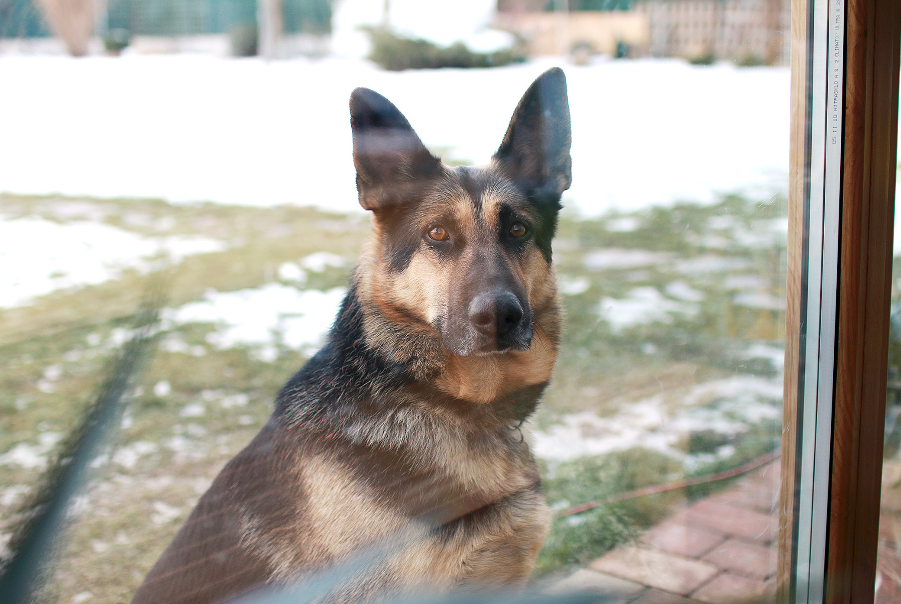
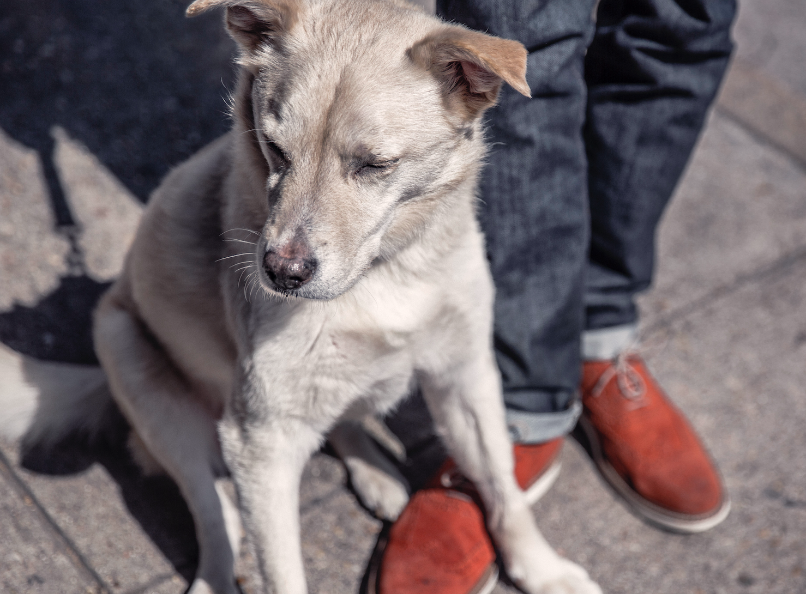
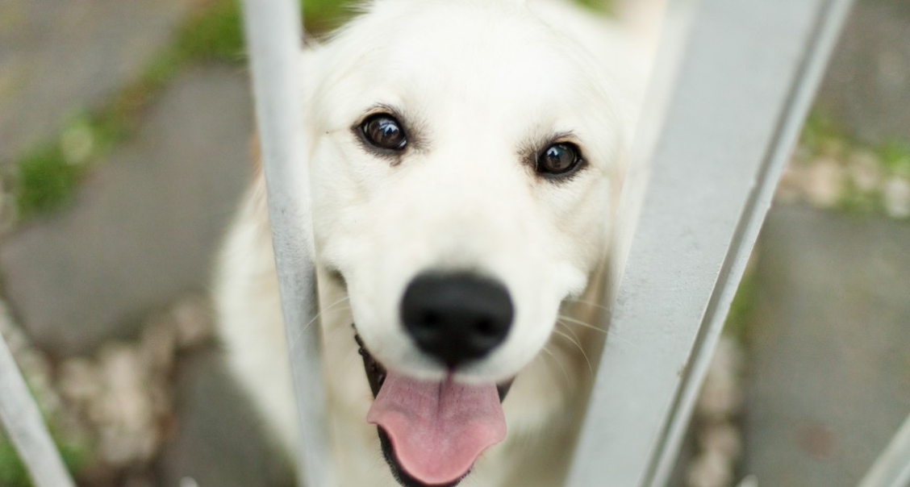

Kelly Kelly is a 3 month old (dog breed). They come with 2 sets of vaccinations, 2 doses of wormer, flea, heart guard prevention and Spay/Neuter.All adoptions are on a first come first serve basis. (Granted your adoption application is approved) We do not take deposits or put holds on animals Adoption Form
 Maggie I am already spayed, up to date with shots, good with kids, good with dogs, and good with cats..All adoptions are on a first come first serve basis. (Granted your adoption application is approved) We do not take deposits or put holds on animals Adoption Form
Comet I am already neutered, up to date with shots, good with kids, good with other dogs, and good with cats..All adoptions are on a first come first serve basis. (Granted your adoption application is approved) We do not take deposits or put holds on animals Adoption Form
Nellie Nellie is a (dog breed) adult female, we are not able to confirm her age . They come with 2 sets of vaccinations, 2 doses of wormer, flea, heart guard prevention and Spay/Neuter.All adoptions are on a first come first serve basis. (Granted your adoption application is approved) We do not take deposits or put holds on animals Adoption Form
Mrs. Friskers cat cat cat cat, All adoptions are on a first come first serve basis. (Granted your adoption application is approved) We do not take deposits or put holds on animals Adoption Form
 cat cat cat cat , All adoptions are on a first come first serve basis. (Granted your adoption application is approved) We do not take deposits or put holds on animals Adoption Form
Nola Nola is such a sweetheart! She is calm and quiet and loves everyone. She is great with dogs and kids (not sure about cats but we think she would be fine). She loves going for a walk or car ride but especially loves loving her humans..All adoptions are on a first come first serve basis. (Granted your adoption application is approved) We do not take deposits or put holds on animals Adoption Form
 Grizzly This is Grizzly he is heart worm positive, has cataracts (to the point of blindness) and glaucoma. When we got him out of the shelter he was very very sick not only with a respiratory infection but a raging urinary track infection as well. After strong antibiotics and the care of a loving foster mom he is feeling much better.All adoptions are on a first come first serve basis. (Granted your adoption application is approved) We do not take deposits or put holds on animals Adoption Form
Nala Nala is about 6 months old and a sweetheart. She likes other dogs although meeting new ones scare her. she just needs a few minutes to warm up. She is house trained and ready to move in with you! She loves to play fetch. All adoptions are on a first come first serve basis. (Granted your adoption application is approved) We do not take deposits or put holds on animals Adoption Form
 Gypsy Meet Heidi , a 16 month old Shepard? type mix, she's housebroken, crate trained, up to date on shots and spayed. She's probably weights around 60 pounds, a high energy girl that would need a active family/person and a fenced in yard. She's also a cuddler and knows her basic commands and minds well, eager to please.All adoptions are on a first come first serve basis. (Granted your adoption application is approved) We do not take deposits or put holds on animals Adoption Form
 Betty Betty is about 2 - 3 years old and a cutie! We think she is a lab/shepherd mix with maybe a slash of pittie. She is petite and only weighs about 40 ponds. She is a sweet girl who loves to cuddle. She came to us as an owner surrender with her 6 babies. She was an excellent mommy but is now ready for her forever home.All adoptions are on a first come first serve basis. (Granted your adoption application is approved) We do not take deposits or put holds on animals Adoption Form